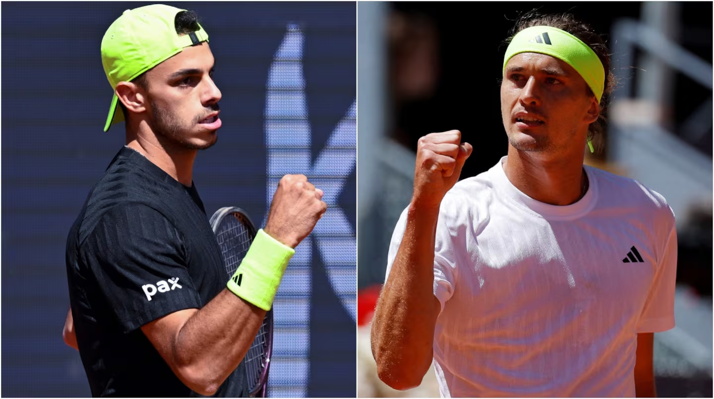

Francisco Cerúndolo (21° ATP) vive un gran momento personal en el circuito y en el Masters 1000 de Madrid volverá a tener la chance de dar un nuevo batacazo ante Alexander Zverev (2°), con quien tiene un positivo historial y lo anima de cara a este duelo.
En su reciente presentación, el pupilo de Nicolás Pastor y Pablo Cuevas, no dejó dudas, al igual que en sus primeros partidos. Ante su compatriota Francisco Comesaña (70°), hizo pesar la jerarquía propia de su juego para imponerse por doble 6-4 y avanzar a octavos de final en la Caja Mágica, por segunda vez en su carrera.
Por su parte, el nacido en Hamburgo, primer preclasificado del torneo, salió aireoso de un compromiso de mucho riesgo ante Alejandro Davidovich Fokina (29°), quien vendió cara su derrota. El teutón se impuso por 2-6, 7-6 (3) y 7-6 (0) y buscará tomarse revancha del argentino, a quien no pudo vencer en los dos compromisos que disputaron, en un historial que incluye un triunfo de Cerúndolo, justamente en esta misma instancia del certamen que se juega en la Capital española, pero en su edición 2024.
presentado por espn